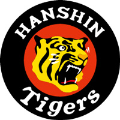

野球
好きなのは売り子と阪神
見たいのはマテオの三振
野球経験
ピッチャーでもなければ草野球チームにも所属してません。小学生の頃に1年間やってただけです。ピッチャーになるための練習を監督に指示されたころに家の都合でチームを抜けました。
やめた後も学校の友達と放課後にやっていましたが、練習というようなものではなかったのでうまくはなってないです。
阪神タイガース

親の影響で物心ついたころから阪神ファンです。小学校、中学校時代は春の開幕戦と夏休みに父親と鈍行で大阪へ行き、試合を見るのが1年の中での楽しみでした。今もときどき見に行きますが、試合よりも売り子のお姉さんを見ている時間のほうが長い気がします。
シップが東京ドームに近いということで年間パスポートを買って阪神戦を見に行こうと思っていたのですが、年間パスポートの金額が初任給よりも高かったので断念しました。ころです。
夏の高校野球
高校野球はテレビでずっと見ていましたが、大学4年の夏に思い出を作るため、甲子園に1週間通いました。
高校野球でもやはり野球よりも売り子さんを見ていることが多く、お気に入りの売り子さんから1日10個以上のかちわりを買っていました。ただ、1週間も何の対策もなく甲子園に通ったので日焼けが火傷になり、水膨れができ、病院送りになりました。次の日にそのお気に入りの売り子さんにそのことを話したら爆笑されました。甲子園の隣にあるららぽーとでは知らないカップルに「あの人黒くない？ウケるwww」と笑われました。あのカップルは許しません。